Data-Driven Innovation
Writing in the ChatGPT AI Era
2025-09-16
Connection with Document Writing Paradigm

📝 Writing: Past and Present
📜 Past (HWP-centric)
Traditional Writing

🚀 Present
Digital Writing

Document Creation Paradigm

5-Stage Document Evolution
Paper Documents (Classic)
- Manual typing
- Print → Copy → Distribution
- Linear workflow
- Difficulty in revision
- Physical constraints
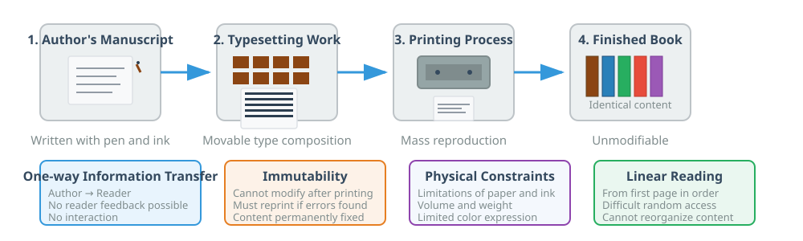
Digital Documents (1980s-1990s)
- Word processor emergence (HWP, MS Word)
- WYSIWYG editing
- Easy digital storage and editing
- Template utilization
- Font and format diversification
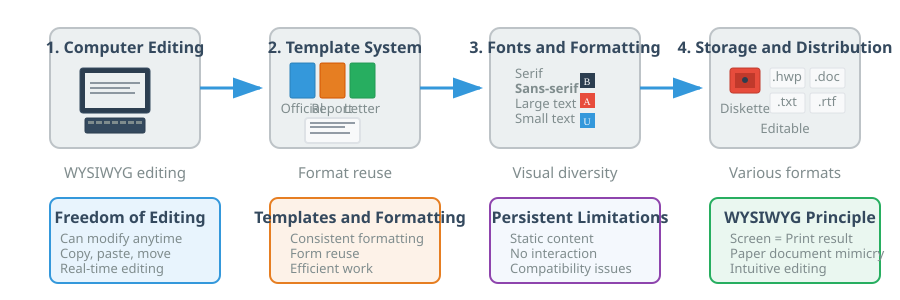
Web Documents (1990s-2000s)
- Hypertext (knowledge connection through links)
- Multimedia integration
- Global accessibility
- Searchability
- Knowledge democratization

Interactive Documents (2010s)
- Executable code (R Markdown, Jupyter)
- Reproducible research
- Responsive interface
- Explorable explanations
- Literate programming realization
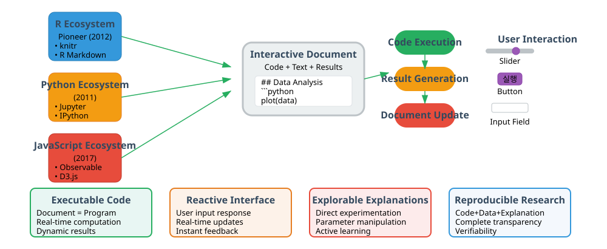
AI Intelligent Documents (2020s~)
- Self-evolving documents
- Conversational interface
- Multimodal integration (text, voice, video)
- Real-time fact-checking and verification
- Personalized customized content
Key Examples:
- NotebookLM: Document → Podcast/Video
- Claude Artifacts: Natural language → Web app
- ChatGPT Canvas: Interactive editing

Document as Code Case: COVID-19 Dashboard


🤖 AI Writing 3-Step Process

Step 1: Ideas & Initial Writing Human-AI Collaboration

Step 2: Content Generation & Optimization Efficiency and Personalization

Step 3: Ethical Review & Final Verification Human Oversight and AI Support
Document Components
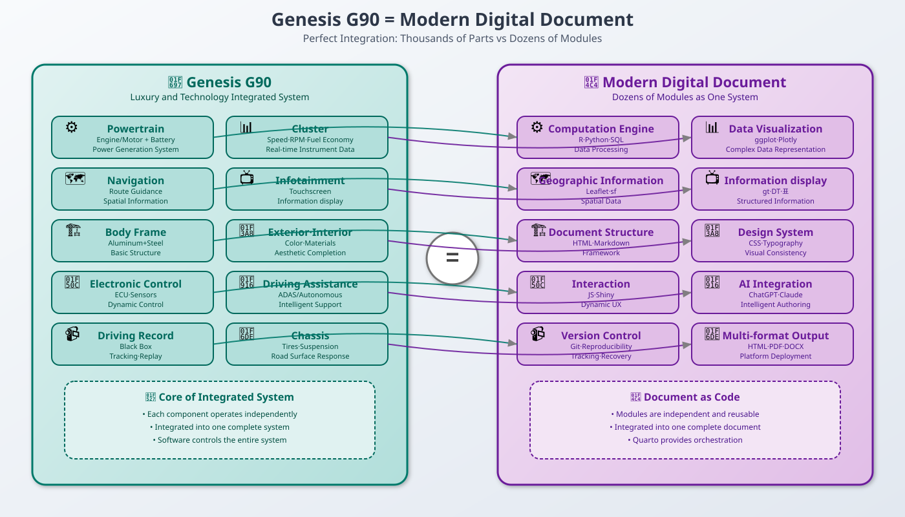
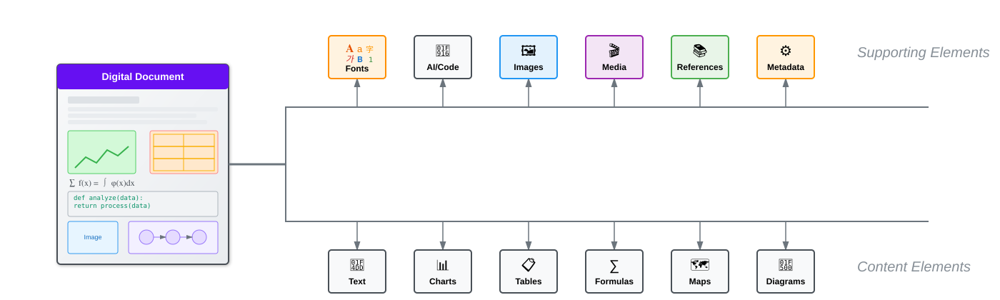

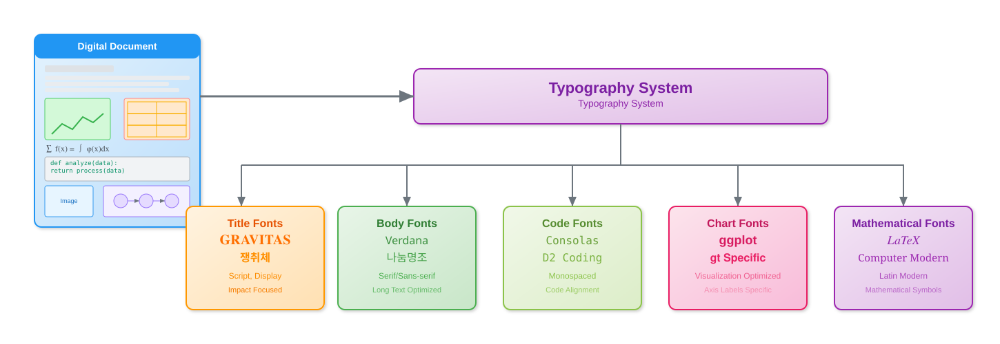


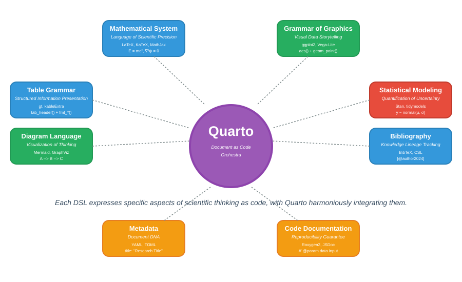
Digital AI Writing
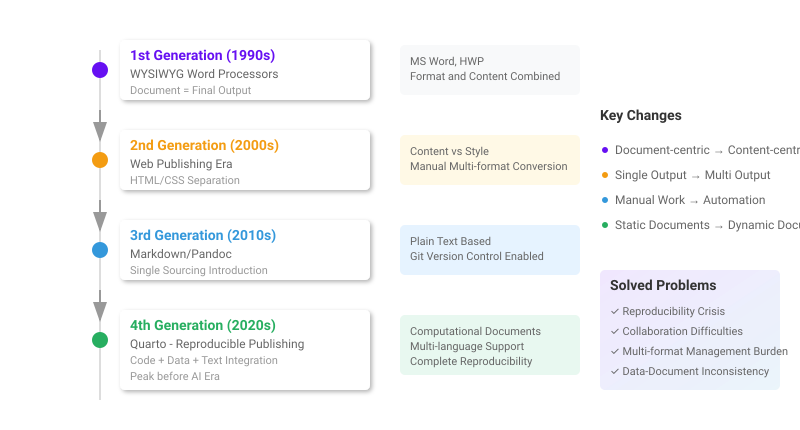
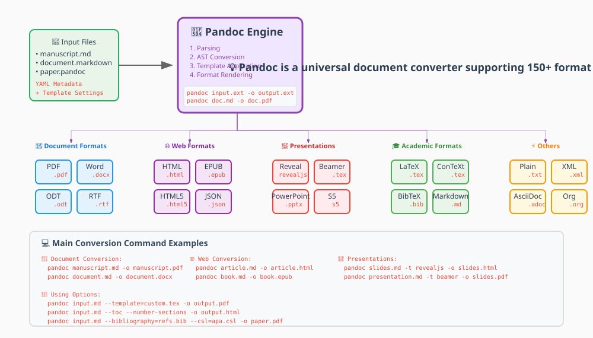
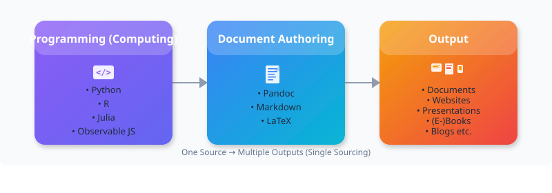


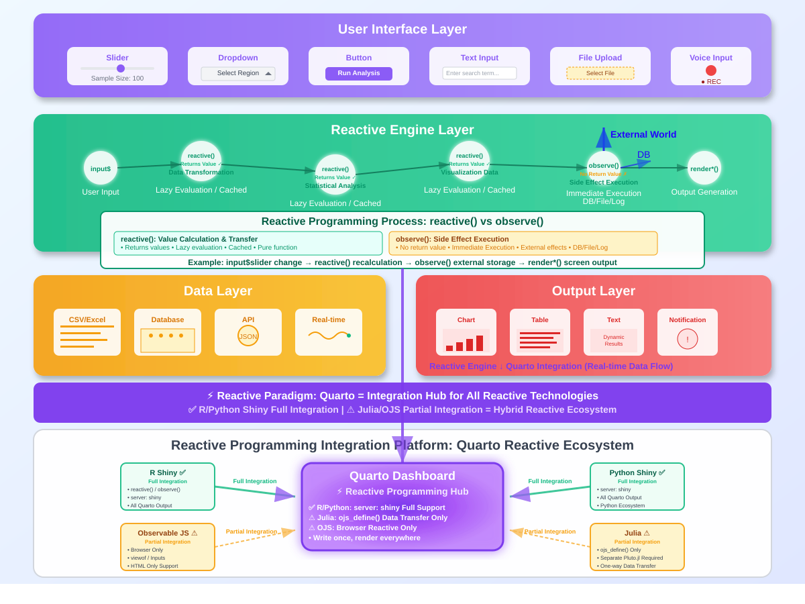